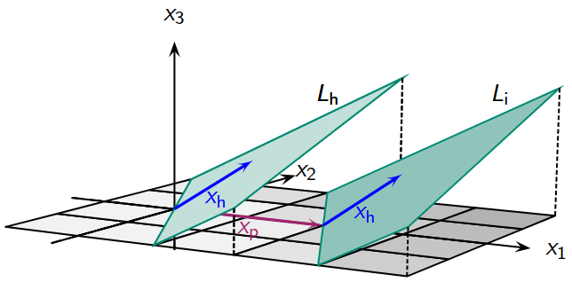
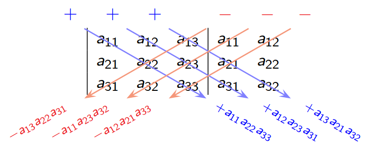

Linear Algebra 01
What is Linear Algebra
Linear algebra is the theory of linear mappings between vector spaces. Broadly, it’s the theory of certain linear data transformations or manipulations. The main actors are vectors and matrices.
Vectors
A vector \(\overrightarrow{a}\) is data of a number (or magnitude) and a direction. A vector is defined only by its length and direction. Two arrows represent the same vector if one is a parallel translation (shift) of the other. A vector is determined by giving the initial and terminal points of a representative, also called the tail and head of the vector. A vector, such as \(\overrightarrow{PQ}\), is defined by the arrow with initial point \(P\) (tail) and terminal point \(Q\) (head).
Note: The position of the arrow is not relevant.
\[ \overrightarrow{a} = \begin{bmatrix} 1 \\ -3 \\ \end{bmatrix} \]
Sum of Vectors
The sum of two vectors is calculated component-wise. The summation of vectors is commutative and associative, includes a neutral element (the zero vector), and can be inverted by its negative vector to result in the zero vector.
\[ \overrightarrow{a} + \overrightarrow{b} = \begin{bmatrix} 1 \\ -3 \\ \end{bmatrix} + \begin{bmatrix} 4 \\ -1 \\ \end{bmatrix} = \begin{bmatrix} 5 \\ -2 \\ \end{bmatrix} \]
Subtraction
The difference of two vectors \(\overrightarrow{a}\) and \(\overrightarrow{b}\) is the sum of \(\overrightarrow{a}\) and the opposite of \(\overrightarrow{b}\).
\[ \overrightarrow{a} - \overrightarrow{b} = \overrightarrow{a} + (-\overrightarrow{b}) \]
Scalar Multiplication
Scalar multiplication of a vector involves multiplying each component of the vector by a scalar (a real number). This changes the magnitude of the vector, keeping its direction the same if the scalar is positive or reversing it if the scalar is negative. Scalar multiplication of vectors is associative and distributive and includes a neutral element (the scalar 1).
\[ \dfrac{1}{2}(\overrightarrow{a} + \overrightarrow{b}) = \dfrac{1}{2}(\begin{bmatrix} 2 \\ 6 \\ \end{bmatrix} + \begin{bmatrix} 4 \\ 2 \\ \end{bmatrix}) = \begin{bmatrix} 3 \\ 4 \\ \end{bmatrix} \]
Magniture (Norm)
The magnitude (or norm) of a vector \(\overrightarrow{a}\) is its length, and it is denoted by \(|\overrightarrow{a}|\).
\[ \lvert \vec{a} \rvert = \sqrt{a_x^{2} + a_y^{2}} \]
Note: Length of vector is never negative: \(\lvert \overrightarrow{a} \rvert \ge 0\).
Zero Vector
The vector with a norm of zero is denoted by \(\overrightarrow{0}\). The length of the zero vector is \(0\).
\[ |\overrightarrow{0}| = 0 \]
Note: A zero vector has no direction.
Opposite Vector
The opposite vector of \(\overrightarrow{a}\) is a vector with the same norm but the opposite direction. It is denoted as \(-\overrightarrow{a}\). In a representative, the initial and terminal points are reversed.
Note: \(\overrightarrow{PQ} = -\overrightarrow{QP}\), but \(\overrightarrow{PQ} \neq \overrightarrow{QP}\)
Unite Vector
A unit vector is a vector that has a magnitude of 1 and is often used to indicate direction.
\[ \lvert \overrightarrow{e} \rvert = 1 \]
Collinearity
Two vectors \(\overrightarrow{a}\) and \(\overrightarrow{b}\) are called collinear or linearly dependent, if:
\[ \overrightarrow{b} = r \overrightarrow{a} \quad \text{for } r \in \mathbb{R} \] \[ s \overrightarrow{b} = \overrightarrow{a} \quad \text{for } s \in \mathbb{R} \]
More generally: \[ r \overrightarrow{a} + s \overrightarrow{b} = \overrightarrow{0} \quad \text{for } r, s \in \mathbb{R} \quad \text{with } r \neq 0 \quad \text{or } s \neq 0 \]
This will be used to generalize definition of linear independence.
Normalization
For every non-zero vector \(\overrightarrow{a}\), there is exactly one unit vector (\(\overrightarrow{e}_a\)) with the same direction. This process is called normalizing a vector.
\[ \overrightarrow{e}_a = \dfrac{1}{\lvert \overrightarrow{a} \rvert}\overrightarrow{a} \]
Vectors between two points
\[ \overrightarrow{PQ} = \begin{bmatrix} x_2 - x_1 \\ y_2 - y_1 \\ \end{bmatrix} \]
Cartesian Coordinate Systems
A Cartesian coordinate system is one in which the axes are perpendicular and the units on each axis have the same length. The unit vectors along the axes are typically denoted by \(\overrightarrow{e}_x\) and \(\overrightarrow{e}_y\). Every vector in this system can be represented as a linear combination of these unit vectors.
\[ \overrightarrow{a} = a_x\overrightarrow{e}_x + a_y\overrightarrow{e}_y \]
Note: \(a_x\) and \(a_y\) are called scalar components of \(\overrightarrow{a}\).
3-D Space
Vectors in 3D space have an additional component to represent the third dimension.
\[ \overrightarrow{a} = \begin{bmatrix} 1 \\ -3 \\ 2 \\ \end{bmatrix} \]
Note: The mathematical rules do not change by adding more dimensions.
System of Linear Equations
A system of linear equations is a collection of two or more linear equations that contain the same variables. The solution to the system is the set of values for the variables that satisfy all equations simultaneously. A linear equation in two variables, \(x\) and \(y\), is an equation of the form:
\[ ax + bx = c \text{, where } a, b, c \in \mathbb{R} \]
A system of linear equations with two variables can only have one of the following possible solutions:
Exactly one solution: Corresponds to a unique intersection point
No solution: Corresponds to mutually exclusive, parallel objects.
Infinitely many solutions: Corresponds to identical objects or objects intersecting along a higher-dimensional object.
Non-Linear equations
- Product of two unknown variables: \(x \cdot y + 1 = x\)
- Trigonometric terms: \(3\sin x + y = 0\)
- Fractions of unknown variables: \(\dfrac{1}{x} + y = 1\)
Matrix Notifications
To generalize determination of solutions of linear equations, we can use the matrix notification.
\[ 2x + 3y = 10 \]
\[ x - y = -5 \]
Short hand notation by writing down coefficients only.
\[ \begin{pmatrix} 2 & 3 & | & 10 \\ 1 & -1 & | & -5 \end{pmatrix} \]
Note: Called coefficient matrix.
Gaussian Elimination Method
Goal of Gaussian elimination method is to apply sequence of elementary row operations in order to transform augmented matrix of a system into a matrix in row echelon form.
Note: Echelon row form is not unique, since interchanging rows is allowed.
Backward Substitution
The system of linear equations is written in a special type of matrix. Solution are easy to determine with so-called backward substitution.
\[ \begin{pmatrix} 2 & 1 & 1 & | & 5 \\ 0 & 8 & 3 & | & 14 \\ 0 & 0 & 1 & | & 2 \end{pmatrix} \]
Pivot element
The pivot element is a key element chosen at each step of an algorithm used to solve a system of linear equations.
Note: The pivot element must be non-zero.
Types of Row Echelon Forms
- In all rows and in all columns there is a pivot: System has unique solutions
- In all rows there is a pivot, but not in all columns: Free variables, so system has infinitely many solutions.
- Some row has no pivot: System is inconsistent (no solutions).
Set of Solutions
Often a free parameter is denoted by \(t\): \(t = y\)
\[ L = \left\{ \begin{bmatrix} 3 \\ 0 \\ 1 \end{bmatrix} + t \begin{bmatrix} -3 \\ 1 \\ 0 \end{bmatrix} \mid t \in \mathbb{R} \right\} \]
Note: \(t\) vary over whole set \(\mathbb{R}\), i.e., from \(-\infty\) to \(\infty\)
Matrices and Operations
Matrices are rectangular set of ordered elements of form:
\[ A = \begin{bmatrix} a_{11} & \dots & a_{1n} \\ \dots & \dots & \dots \\ a_{m1} & \dots & a_{mn} \end{bmatrix} \]
Note: Ordered set has m rows and n columns: \(m \times n\)-matrix.
Two matrices \(A\) and \(B\) are equal, if:
- \(m = p and n = q\)
- \(a_{ij} = b_{ij} \text{ for all } 1 \le i \le m \text{ and } 1 \le j \le n\)
Special Matrices
- Squared matrix: \(n \times n\)
- Column vector of dimension \(n\) (or vector): \(n \times 1\)
- Row vector of dimension \(n\): \(1 \times n\)
- Zero matrix: All entries are zero.
- Upper/Lower square matrix
- Diagonal matrix: Only entries in main diagonal can be nonzero.
Note: Set of all \(n\)-vectors with real entries: \(\mathbb{R}^{n}\)
Matrix Operations
Transposition
Transposing a matrix means swapping rows and columns. If \(A\) is a matrix, then its transposed matrix \(A^{T}\) is defined by:
\[ (A^{T})_{ij} = A_{ji} \]
Note: Square matrix \(A\) is symmetric, if: \(A^{T} = A\)
Addition and Subtraction
Addition and subtraction of matrices are performed element by element. > Note: Both matrices must have the same dimensions.
Scalar Multiplication
In scalar multiplication, each element is multiplied individually by the number.
Rules for addition and scalar multiplication of matrices
Let \(A, B, C \in \mathbb{R}^{m \times n}\) and \(r, s \in \mathbb{R}\):
- \((A+B)+C = A+(B+C)\) (Associativity)
- \(A+B = B+A\) (Commutativity)
- \(A+\mathcal{O}_{m,n} = A\) (Neutral element of addition)
- \(A+(-A) = \mathcal{O}_{m,n}\) (Inverse element of addition)
- \(r(sA) = (rs)A\) (Associativity)
- \((r+s)A = rA+sA\) (Distributivity)
- \(r(A+B) = rA+rB\) (Distributivity)
- \(1 \cdot A = A\) (Neutral element of scalar mult.)
- \((A+B)^{T} = A^{T}+B^{T}\)
Matrix Multiplication
Matrix multiplication is the process of combining the rows of the first matrix with the columns of the second matrix. The number of columns in the first matrix must be equal to the number of rows in the second matrix. Each element of the result matrix is calculated by forming the scalar product (element-wise product and then sum) of a row from the first matrix and a column from the second matrix.
Note: The order is crucial: \(A \times B\) can be different from \(B \times A\).
Mnemonic
\[ (m \times \mathbf{\color{red}{n}}) \cdot (\mathbf{\color{red}{n}} \times p) = (m \times p) \]
Rules for matrix multiplication
Let \(A, B, C\) matrices such that following matrix multiplications exist:
- \((AB)C = A(BC)\) (Associativity)
- \((A+B)C = AC + BC\) (Distributivity)
- \(A(B+C) = AB + AC\) (Distributivity)
- \((rA)B = A(rB) = r(AB)\) for \(r \in \mathbb{R}\)
- \(A \cdot \mathcal{O}_{n,q} = \mathcal{O}_{m,q}\) and \(\mathcal{O}_{p,m} \cdot A = \mathcal{O}_{p,n}\) for \(A \in \mathbb{R}^{m \times n}\)
- \(I_m \cdot A = A \cdot I_n = A\) for \(A \in \mathbb{R}^{m \times n}\) (Neutr. El.)
- \((AB)^{T} = B^{T} A^{T}\)
Week 4: Matrices and Linear Systems
Linear Sytsems in Matrice Form
System with m equations and n unknowns can be expressed in form \(Ax = b\), where A is the coefficient matrix and b is the right-hand side of the system.
Linear Systems on Vector Form
The system can be presented in form \(x_aa_1 + \dots x_na_n = b\). If \(x \in \mathbb{R^{n}}\) is a solution of system, then b is a linear combination of column vectors \(a_1, \dots, a_n\).
Homogeneous Systems
A linear system is homogeneous, if right-hand side is zero vector: \(Ax = 0\), where \(A \in \mathbb{R}^{m \times n}\) and \(x\) is a vector of unknowns.
Note: Zero vector \(x = 0 \in \mathbb{R^{n}}\) is trivially a solution of a homogeneous system
Information in a Linear System
Let \(A\) be an (\(m \times n\))-matrix and \(T\) be a row echelon form obtained from \(A\) using elementary row operations.
- Rank of \(A\): Number of pivot-elements in \(T\).
- Nullity of \(A\): Number of columns of \(T\) without pivot-elements.
Note: Rank of matrix \(A\) is denoted by rk \(A\) and nullity of \(A\) by nullity \(A\).
Therefore
\[ \text{rk } A + \text{nullity } A = n = \textsf{number of cols of } A \]
Inhomogeneous Systems
Form where \(b \ne 0\) is a non-zero vector. Every solution x of the inhomogeneous system (\(Ax=b\)) can be written as the sum of a special (particular) solution \(x_p\) and a homogeneous solution \(x_h\):
\[ x = x_p + x_h \]
The entire solution set of the inhomogeneous system \(Ax=b\) thus consists of the shift of the solution space (or zero space) of the homogeneous system \(Ax=0\) by the vector \(x_p\).

Square Linear Systems
If the number of equations and numbers of unknowns in a linear system coincide (\(m = n\)), than:
- nullity \(A = 0\).
- rk \(A = n\).
- \(Ax = 0\) admits only trivial solution \(0\).
- \(Ax = b\) has one and only one solution.
Rank Criterion
A linear equation system \(Ax=b\) has at least one solution (is consistent) if and only if the rank of the coefficient matrix A is equal to the rank of the augmented coefficient matrix \([A \quad b]\). The rank of the extended coefficient matrix \([A \quad b]\) is created by appending the inhomogeneity vector b as an additional last column to the matrix \(A\).
Week 5: Inverse of a Matrix
Consider the equation:
\[ ax = 1 \]
where \(x\) os is unknown and \(a\) on nonzero. To solve this equation, we multiply by \(a^{-1}\):
\[ x = a^{-1} \]
So, \(a^{-1}\) is called the inverse of \(a\).
Note: Zero does not have any inverse.
A square matrix \(A \in \mathbb{R}^{n \times n}\) is invertible, regular or non–singular, if there exists a matrix \(X \in \mathbb{R}^{n \times n}\) such that:
\[ AX = I_n \]
Denote \(A^{-1} = X\) and call it inverse matrix of \(A\) or simply inverse.
Note: Otherwise: \(A\) is singular or non–invertible
Identity Matrix
The identity matrix of size \(n\) is the \(n \times n\) square matrix with ones on the main diagonal and zeros elsewhere.
\[ I = \begin{bmatrix} 1 & 0 & 0 \\ 0 & 1 & 0 \\ 0 & 0 & 1 \\ \end{bmatrix} \]
Calculate the Inverse Matrix
\[ [A|I_n] \]
By using elementary rows transformations transform left term A to row echelon form.
\[ [I_n|\tilde{A}] \]
Rules of Inverse
Let \(A\) and \(B\) be invertible (\(n \times n\))-matrices and \(s \ne 0\) a scalar. Then \(A^{−1}\), \(sA\), \(AB\) and \(A^{T}\) are invertible and the following hold:
- \((A^{-1})^{-1} = A\)
- \((sA)^{-1} = s^{-1}A^{-1}\)
- \((AB)^{-1} = B^{-1}A^{-1}\)
- \((A^{T})^{-1} = (A^{-1})^{T}\)
Generally: \[ (AB)^{−1} \ne A^{−1}B^{−1} \]
Furthermore there is no rule for sum, so no rule for \((A + B)^{−1}\), which could even not exist.
Week 6: Determinant
The determinant is a special scalar value (a single number) that can only be calculated from a square matrix. This value contains important information about the matrix and the linear transformation it represents. Determinant tells when matrix is invertible or not.
\[ \det A = \det \begin{bmatrix} a & b \\ c & d \end{bmatrix} = \begin{vmatrix} a & b \\ c & d \end{vmatrix} = ad - bc \]
Invers Matrix by Determinant
Matrix \(A\) is invertible if and only if det \(A \ne 0\)
\[ A^{-1} = \frac{1}{\det A} \begin{bmatrix} a_{22} & -a_{12} \\ -a_{21} & a_{11} \end{bmatrix} \]
Properties of Determinant
\[ \det(v,w) = − \det(w,v) \]
\[ \det(x \times v,w) = \det(v,x \times w) = x \times \det(v,w) \]
\[ \det(v + x \times w, w) = \det(v, w + x \times v) = \det(v,w) \]
\(3 \times 3\)-Matrices
\[ \begin{vmatrix} a_{11} & a_{12} & a_{13} \\ a_{21} & a_{22} & a_{23} \\ a_{31} & a_{32} & a_{33} \end{vmatrix} = a_{11}a_{22}a_{33} + a_{12}a_{23}a_{31} + a_{13}a_{21}a_{32} - a_{13}a_{22}a_{31} - a_{11}a_{23}a_{32} - a_{12}a_{21}a_{33} \]

Determinant of Triangular Matrices
Determinant is product of main diagonal elements. If an entry of main diagonal is zero, then det \(U = 0\).
Sign switched: As many times as row swappings.
Calculation of Determinant of Square Matrix A
By performing elementary rows operations, bring A into an upper triangular matrix.
Rules for determinants
\[ \det A^{T} = \det A \]
\[ \det(sA) = s^{n} \det A \]
Note: \(n\) is the dimension of the square matrix \(A\).
\[ \det(AB) = (\det A)(\det B) \]
Corollary
Product AB of two square matrices of same size is invertible if and only if A and B are both invertible.
Week 7: Linear Systems with Python
Library scipy.linalg:
solve(A,b): Unique solution of the linear system \(Ax = b\) with regular quadratic coefficient matrix \(A\)lu_factor(A): PLU-decomposition of matrix \(A\)lu_solve((lu,piv),b): Unique solution of system \(Ax = b\) with output(lu,piv)oflu_factor(A)lstsq(A,b): (Least-squares) solution of system \(Ax = b\) with arbitrary coefficient matrix \(A\)null_space(): General solution of homogeneous system \(Ax = 0\)
Library numpy.linalg:
matrix_rank(A): Rank of matrix \(A\)